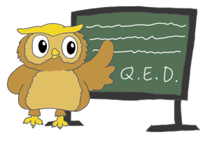

About this tutorial
Welcome to Learn You an Agda and Achieve Enlightenment!. If you’re reading this, you’re probably curious as to what Agda is, why you want to learn it, and in general what the big deal is about dependently typed, purely functional programming.
Inspired by BONUS, the writer of Learn You a Haskell, I decided that I should write an approachable Agda tutorial that would introduce dependently typed programming to ordinary people rather than Ivory Tower Academics. Of course, seeing as I am one of those Ivory Tower Academics, this might not be easy. I am, however, prepared to give it a try. Learning Agda was a very rewarding but very difficult process for me. It is my hope that, by writing this tutorial, it will become a little bit easier for everyone else.
Step One: Learn Haskell
This tutorial is not aimed at anyone completely new to programming. Agda is similar on a basic level to typed functional languages such as Haskell and ML, and so knowing a language in the ML family will certainly make learning Agda a great deal easier. If you don’t know a statically typed functional language, I recommend that you learn Haskell, as Agda has a close relationship with the Haskell ecosystem. If you’re looking for a good Haskell tutorial, look no further than this book’s companion, Learn You a Haskell. You should only have to read the first few chapters of this book in order to get a feel for Agda.
If you don’t know how purely functional programming works, learn a little of it before trying to tackle Agda.
Understanding of imperative and object oriented programming (C, Java, Ruby..) isn’t necessary. In fact, trying to apply skills learnt from these languages might even be harmful when you’re trying to learn Agda.
The moral of the story is: keep an open mind. A lot of Agda’s power comes from features that are at first difficult to understand. It took a long time for everything in Agda to fall into place in my head. Agda is hard. After some time, though, Agda’s inherent awesomeness comes to the fore, and it all just clicks. If you encounter obstacles in your Agda learning, don’t be discouraged! Keep working, and eventually you will be a master of Agda fu.
What is Agda, anyway?
Agda is a programming language, but not a programming language like Java. It’s not even very much like Haskell, although it’s a lot more like Haskell than Java.
Agda is a programming language that uses dependent types. Many of you would be familiar with types from imperative languages such as Java or C++, and if you’re reading up to this point, you should also have a familiarity with types from Haskell.
Types in these languages essentially annotate expressions with a tag. At a simple level, an expression’s type might just be a concrete type, like Bool or Int. Java (through generics), C++ (through templates) and Haskell all support polymorphic types as well, such as List a or Map k v.
But, if List a is a type, then what exactly is just List (without the parameter)? Haskell calls it a “type constructor”, but really it’s a function at the type level. List takes in a type, say Int, and returns a new type, List Int. Haskell (with appropriate extensions) even supports arbitrary functions on the type level, that don’t necessarily have to construct a type term, and instead can simply refer to existing ones.
So, Haskell has type-level functions, even type-level types (kinds). It almost seems like an entirely new language, overlaid over Haskell, that operates at compile time, manipulating type terms.
In fact, you could think of any type system this way. In C++, people exploit the Turing-completeness of their type system to perform compile-time analysis and computation. While such type level work is very powerful, I fear that such type machinery is very often difficult to understand and manipulate. Even in Haskell, applications that make extensive use of type-level computation are very often substantially harder to comprehend. The type-level “language” is almost always substantially more complicated to work with than the value-level “language”1.
In Agda, the distinction between types and values does not exist. Instead, the language you use to manipulate type terms is exactly the same language that you use to manipulate values.
This means that you can actually include values inside a type. For example, the List type constructor can be parameterized by both the type of its contents and the length of the list in question (we’ll be doing this later). This allows the compiler to check for you to make sure there are no cases where you attempt to call head on a potentially empty list, for example. Being able to include values inside a type, and use all the same value-level operations on them, is what makes Agda dependently typed - Not only can values have a type, but types can have a value.
In fact, seeing as the language of values and the language of types are the same, any property that you can express about a value can be expressed statically in its type, and machine checked by Agda. We can statically eliminate any error scenario from our program.
Types are Proofs

If I can come up with a function of type Foo -> Bar (and Agda says that it’s type correct) that means that I’ve, in addition to written a program, also written a proof by construction that, assuming some premise Foo, the judgement Bar holds (We’ll touch more on proofs later - I don’t want to get bogged down in details just yet)
Seeing as our Foo and Bar can be as expressive as we like, this lets us prove anything we want about our program simply by exploiting this correspondence between proofs and programs - called the Curry-Howard Correspondence, discovered by two brilliant logicians in the sixties.
Why prove when you can just test?
The validity of formal verification of software is often hotly contested by programmers who usually have no experience in formal verification. Often testing methodologies are presented as a more viable alternative.
While formal verification is excessive in some situations where bugs are acceptable, I hardly think that testing could replace formal verification completely. Here’s three of reasons why:
- Proofs work in concurrent scenarios. You can’t reliably unit test against race conditions, starvation or deadlock. All of these things can be eliminated via formal methods.
- Proofs, like programs, are compositional. Tests are not. In testing scenarios, one typically has to write both unit tests and integration tests: unit tests for testing small components individually, and integration tests for testing the interaction between those small components. If I have proofs of the behavior of those small components, I can simply use those proof results to satisfy a proof obligation about their interaction – there is no need to reinvent everything for both testing scenarios.
- Proofs are fool-proof. If I have a suite of tests to show some property, it’s possible that that property does not actually hold - I simply have not been thorough enough in my tests. With formal verification, it’s impossible for violations of your properties to slip through the cracks like that.
Of course, proofs are not for every scenario, but I think they should be far more widely used than they currently are.
Thanks to Curry-Howard, Agda can also be used as a proof language, as opposed to a programming language. You can construct a proof not just about your program, but anything you like.
In fact, Curry-Howard shows us that the fundamentals of functional programming (Lambda Calculus), and the fundamentals of mathematical proof (Logic) are in fact the same thing (isomorphic). This means that we can structure mathematical proofs in Agda as programs, and have Agda check them for us. It’s just as valid as a standard pen-and-paper mathematical proof (probably more so, seeing as Agda doesn’t let us leave anything as “an exercise to the reader”2) - and Agda can check our proof’s correctness automatically for us. We’ll be doing this later by proving some basic mathematical properties on Peano natural numbers.
So, Agda is a language that really lives the dream of the Curry-Howard correspondence. An Agda program is also a proof of the formula represented in its type.
How do I get started?
At the time of writing, it is only really feasible to edit Agda code using Emacs. GNU Emacs or XEmacs are both fine. I personally am not an Emacs fan, but even I use Emacs to edit Agda, and so should you. You don’t need a great deal of Emacs proficiency to edit Agda code, however.
You’ll also need GHC, a Haskell compiler, and an assortment of tools and libraries that make up the Haskell Platform. It is the best way to get started using Haskell, and it’s also the easiest way to get Agda.
Once you have Haskell and Emacs, there are three things you still need to do:
Install Agda. Linux users may have Agda packages available from their package manager (search for “agda” to find out). If not or otherwise, simply use the Haskell platform’s
cabal-installtool to download, compile, and set up Agda.$ cabal install AgdaInstall Agda mode for emacs. Simply type in a command prompt (where Agda is in your
PATH):$ agda-mode setupCompile Agda mode as well (you’ll need to do this again if you update Agda):
$ agda-mode compile
By then you should be all set. To find out if everything went as well as expected, head on over to the next section, “Hello Peano!”.